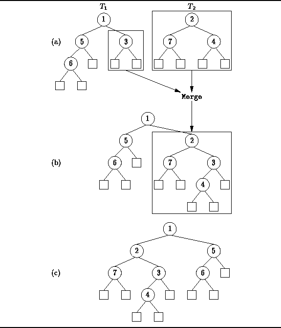
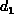
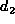
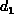
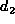
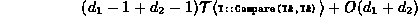
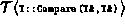
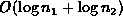
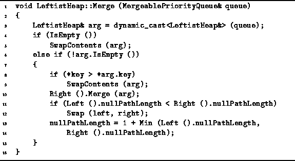

Data Structures and Algorithms
with Object-Oriented Design Patterns in C++
Data Structures and Algorithms
with Object-Oriented Design Patterns in C++In order to merge two leftist heaps, say h1 and h2, declared as follows
LeftistHeap h1; LeftistHeap h2;we invoke the Merge operation like this:
h1.Merge (h2);The effect of the Merge routine is to take all the nodes from h2 and to attach them to h1, thus leaving h2 as the empty heap.
In order to achieve a logarithmic running time, it is important for the Merge routine to do all its work on the right sides of h1 and h2. It turns out that the algorithm for merging leftist heaps is actually quite simple.
To begin with, if h1 is the empty heap, then we can simply swap the contents of h1 and h2. Otherwise, let us assume that the root of h2 is larger than the root of h1. Then we can merge the two heaps by recursively merging h2 with the right subheap of h1. After doing so, it may turn out that the right subheap of h1 now has a larger null path length than the left subheap. This we rectify by swapping the left and right subheaps so that the result is again leftist. On the other hand, if h2 initially has the smaller root, we simply exchange the rôles of h1 and h2 and proceed as above.
Figure  illustrates the merge operation.
In this example, we wish to merge the two trees
illustrates the merge operation.
In this example, we wish to merge the two trees  and
and  shown in Figure (a).
Since
shown in Figure (a).
Since  has the larger root,
it is recursively merged with the right subtree of
has the larger root,
it is recursively merged with the right subtree of  .
The result of that merge replaces the right subtree of
.
The result of that merge replaces the right subtree of  as shown in Figure (b).
Since the null path length of the right subtree is now greater than the left,
the subtrees of
as shown in Figure (b).
Since the null path length of the right subtree is now greater than the left,
the subtrees of  are swapped giving the leftist heap
shown in Figure (c).
are swapped giving the leftist heap
shown in Figure (c).

Figure: Merging Leftist Heaps
Program gives the code for the Merge member
function of the LeftistHeap class.
Clearly, the Merge routine only visits nodes on the rightmost paths
of the trees being merged.
Suppose we are merging two trees, say  and
and  ,
with null path lengths  and , respectively.
Then the running time of the Merge routine is
,
with null path lengths  and , respectively.
Then the running time of the Merge routine is

where  is time required to compare two keys.
If we assume that the time to compare two keys is a constant,
then we get ,
where  and
and  are the number of internal nodes in
trees
are the number of internal nodes in
trees  and
and  , respectively.
, respectively.

Program: LeftistHeap Class Merge Member Function Definition
 Copyright © 1997 by Bruno R. Preiss, P.Eng. All rights reserved.
Copyright © 1997 by Bruno R. Preiss, P.Eng. All rights reserved.